01 / Overview
Refactory in one sentence.
Refactory accelerates the migration of integration applications across MuleSoft, Google Application Integration, Apache Camel and Spring Boot.
It analyses a source project, reconstructs its behaviour and produces a target project with the information needed for review, configuration and validation.
What the tool produces
A complete source project or importable target artefact, together with an inspectable IR and a migration manifest.
Where human expertise remains
Environment configuration, credentials, unsupported connectors and final functional acceptance remain engineering decisions.
Platforms covered
MuleSoft
XML flows and DataWeave transformations

Google Application Integration
Managed integrations exported as platform-specific JSON
Apache Camel
Java routes and enterprise integration patterns
Spring Boot
Imperative Java services and application code
02 / Domain context
What is an iPaaS?
An Integration Platform as a Service connects applications and systems that were not designed to communicate directly.
An integration can receive an API request, authenticate it, transform the payload, apply routing rules, call several systems and handle technical or business errors. The platform supplies the components and runtime used to express that behaviour.
Why organisations move
Cloud strategy
Align integration workloads with a new cloud ecosystem.
Cost and licensing
Reduce expenditure or avoid an unfavourable commercial model.
Standardisation
Consolidate several integration stacks after growth or acquisition.
Modernisation
Replace ageing flows and unsupported components.
Capability
Adopt stronger governance, observability or cloud-native services.
Vendor independence
Regain freedom to evolve without rewriting an entire estate manually.
03 / Migration challenges
Why is migration difficult?
Business logic is deeply tied to each platform. A migration must recover that logic, preserve its meaning and express it through a different technical model.
The difficulty comes from four connected constraints. Each one affects delivery speed, cost and confidence in the migrated system.
01Strong coupling
Business logic is embedded in platform syntax, components and configuration.
Core behaviour is difficult to separate from platform-specific constructions.
02Semantic loss
Syntax conversion does not capture the full meaning or dependencies of a flow.
A technically valid conversion can still change functional behaviour.
03Rewrite cost
Engineers rebuild business logic manually, one flow at a time.
Delivery slows down while technical debt and operating costs increase.
04Frozen evolution
Adding or changing a platform requires more specialised development.
Future platform changes restart a large part of the migration effort.
Large estates can turn this repeated work into programmes that run for months or years and require scarce platform expertise.
04 / Why AI
A strong use case for language models.
Migration combines interpretation, transformation and code generation. The inputs are heterogeneous, the intent is spread across several artefacts and the output must follow the conventions of a different platform.
Recover intent from context
Connect information found across code, XML, configuration, schemas and referenced flows.
Map between different models
Reason about equivalent behaviour when the target platform expresses it differently.
Produce target-native artefacts
Create code and configuration that follow the structure and conventions of the selected target.
These capabilities can remove a large amount of repetitive work from migration projects. Engineers can begin with a generated baseline and focus their time on review, unsupported cases, configuration and functional acceptance.
05 / Objectives and constraints
What the solution had to optimise.
The solution had to reduce migration effort while preserving trust in the generated result.
Productivity
Automate repeated analysis and implementation work so experts can concentrate on review and exceptional cases.
Fidelity
Preserve routing, transformations, dependencies, side effects and error behaviour across execution models.
Traceability
Keep generated decisions, source references, warnings and remaining actions visible to the engineer.
Maintainability
Keep platform-specific knowledge isolated so new sources and targets can be added without redesigning the whole system.
Security
Detect credentials and sensitive configuration before any model interaction and preserve them as explicit placeholders.
06 / Design principles
Structure the intelligence before building the pipeline.
Integration migration is not fault tolerant. A subtle change in a condition, variable or error path can alter production behaviour. The architecture therefore limits uncertainty and makes each result inspectable.
Separate source knowledge, shared meaning and target knowledge
Each part can evolve, be tested and be maintained without spreading platform-specific logic through the system.
Give models bounded responsibilities
Structured inputs, typed outputs and clear stage boundaries reduce hidden assumptions and make failures easier to locate.
Validate outside the model
Generated artefacts are checked against contracts, references and executable tests before they are accepted.
Responsibility by principle
Tasks that require interpretation
- Understand business intent from heterogeneous context
- Propose semantic mappings and target structures
- Generate code and configuration
- Suggest focused corrections from validated errors
Tasks that require certainty
- Extract facts from known formats
- Enforce schemas, identifiers and contracts
- Protect secrets and assemble artefacts
- Compile, execute and validate the result
07 / Problem formulation
Migration is a semantic problem.
An integration application is an execution graph. Routing, transformations, side effects and failure paths all interact.
Line-by-line conversion
A conventional converter assumes that elements arrive in order and have direct equivalents. That works for a local syntax transformation. An application distributes behaviour across configuration, code and referenced flows.
Reconstruct an execution graph
The system must understand how a trigger, transformation, condition, API call, response and error path relate. Equivalent behaviour may require a different structure on the target.
The same intent can live in very different projects
A Google integration can appear as a visual task graph, MuleSoft as connected XML files and Spring Boot as controllers, services, models and exception handlers. Migration begins by reconstructing comparable meaning from these different architectures.
src/main/mule/
├─ api-main.xml
├─ global.xml
└─ implementation.xml
src/main/resources/
└─ configuration.yaml
src/main/java/
├─ controller/
├─ service/
├─ model/
└─ exception/
pom.xml
src/main/java/
├─ routes/
├─ processors/
├─ aggregation/
└─ error/
application.properties
Migration reconstructs intent and expresses it faithfully in another execution model.
08 / Existing process
What a manual migration involves.
Before automating the task, I represented the work an integration engineer performs: inventory the source, define the target architecture, order the migration by dependency, rebuild the project, then deploy and validate it.
Frame & inventory
Objectives, scope, assets and dependencies
Define the target
Architecture, gaps and risks
Plan the work
Order according to dependencies and criticality
Migrate & validate
Build, deploy, verify and stabilise
The process is iterative: validation frequently reveals a missing assumption and sends the engineer back to the target design or migration plan.
The scaling problem
A converter written for every platform pair grows from N × M. With four sources and four targets, sixteen separate translation paths are required.
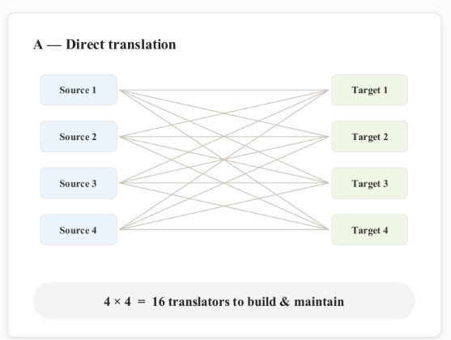
09 / Architectural decision
Introduce one canonical model between two independent subsystems.
The intermediate representation removes direct knowledge between source analysis and target generation.
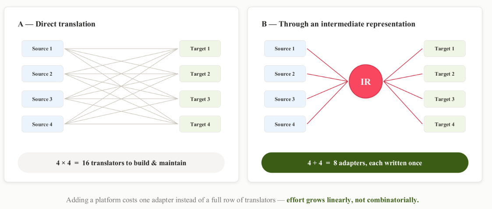
This choice makes the architecture extensible, but it also makes the IR a critical contract. It must preserve behaviour without reproducing the vocabulary of one particular platform.
10 / System architecture
The complete migration pipeline.
Refactory has two subsystems joined by the canonical IR. The first understands the source; the second builds and validates the target.
IR
Preprocess
Parse and normalise the source
Ingest
Interpret application semantics
IR
Store independent intent
Generate
Plan, write and assemble
Assemble
Build a coherent target project
Repair
Use concrete execution feedback
Validate
Check structure and behaviour
Document
Generate the migration manifest
Everything before the IR knows only the source. Everything after it knows only the target. Neither subsystem imports platform-specific logic from the other.
11 / Source subsystem
Preprocessing: reconstruct the project before asking the model to interpret it.
The preprocessor converts a repository into a normalised, ordered and secret-free description of the application.
XML, JSON or Java files, build descriptors, configuration and references.
Ordered flows, symbols, dependencies, API contracts and protected placeholders.
Reconstruct cross-file dependencies
Calls between flows, referenced subflows and shared configurations become a directed graph. Unresolved references are recorded instead of silently ignored.
Build a coherent analysis order
Topological ordering places dependencies before their consumers. Cycles are retained explicitly because they may describe retries, recursive routing or a modelling error.
Resolve variables and configuration references
The symbol table records variables, properties, component references and their scopes so the ingestion model can interpret values defined outside the current file.
http.listener.portproject propertyvars.customerIdflow scopeBackend_HTTPglobal configuration
Separate sensitive values before model calls
Credentials, tokens and internal endpoints are removed from the model input. Their semantic role remains visible through explicit placeholders and is carried into the migration manifest.
client.secret = actual-value→client.secret = ${CLIENT_SECRET}
Example: MuleSoft preprocessing
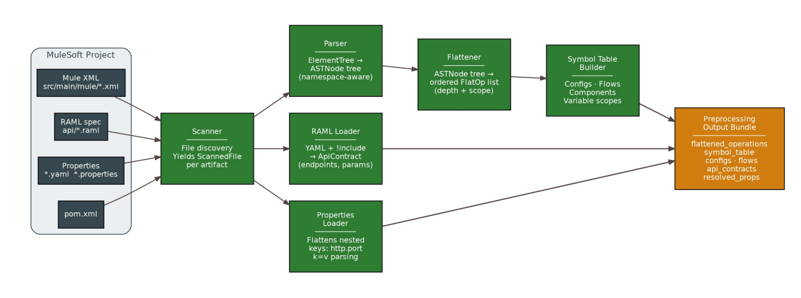
File discovery, reference resolution and dependency ordering are computable. Giving them to an LLM would add variability without adding useful reasoning.
12 / Semantic ingestion
Translate the normalised project into integration intent.
The ingestion agent receives the preprocessed graph and maps source elements to a typed, platform-independent schema.
It identifies triggers, transformations, external effects, control decisions and error semantics while preserving links back to the source artefacts.
What the ingestion prompt contains
Role and output
The exact semantic object to produce.
Critical invariants
Rules that must never be violated.
Ordered reasoning passes
A repeatable decomposition of the analysis.
Closed vocabulary
Allowed intentions and error categories.
Empirical failure memory
Known traps collected during migrations.
Structured output
Typed fields, fallback behaviour and an example.
The seven IR layers
Metadata
Identity and traceability
Triggers
What starts the integration
Security
Authentication and authorisation
Transformations
Mappings and original scripts
Effects
Calls, writes and side effects
Control
Order, conditions and parallelism
Errors
Failures versus business responses
A technical outage and an intentional business rejection may both look like errors in a source platform, but they must not be migrated with the same behaviour.
Preserve original transformations
Mapping scripts keep their original text and language instead of being reduced to a lossy natural-language summary.
Keep unknown information unknown
Missing configuration and unresolved references remain explicit placeholders. The model does not invent replacements.
13 / Target subsystem
Generation: plan globally, generate locally, assemble deterministically.
The target subsystem combines specialised model calls with deterministic validation, assembly and execution feedback.
The complete target-generation chain
The planner reads the whole IR, developer agents generate bounded components, and deterministic code controls the project structure. RAG supplies verified target knowledge where public documentation is insufficient.
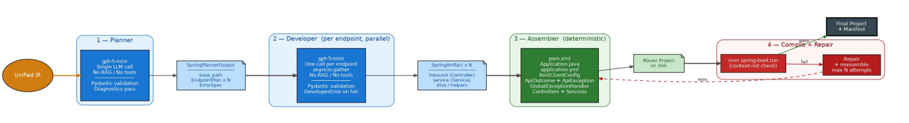
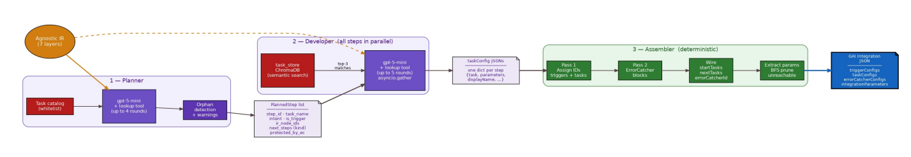
Decide the target architecture before writing code
The planner reads the complete IR once and produces an ordered list of target components and their connections. It must see the whole graph because routing and error wiring cannot be decided independently.
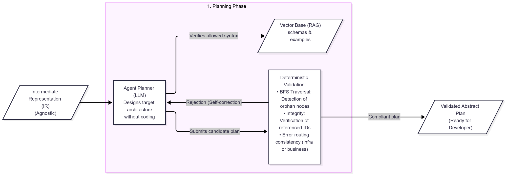
Ground generation in verified platform examples
Google Application Integration exports were poorly represented in public documentation. I manually created useful components, exported valid JSON definitions and indexed them in ChromaDB. Semantic search retrieves the closest schemas and examples before generation.
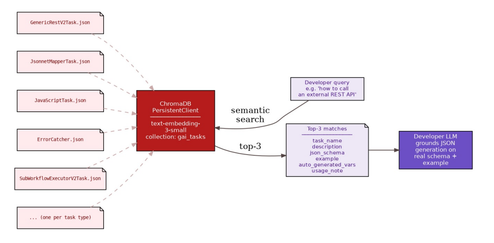
When prompt changes could not make request-parameter mapping reliable, I removed that responsibility from the model and reconstructed it deterministically from the API contract.
Generate bounded components in parallel
Each planned entry point becomes an independent generation request. This reduces context size, isolates failures and allows calls to run concurrently. Developers may reference shared artefacts but cannot redefine files owned by the assembler.
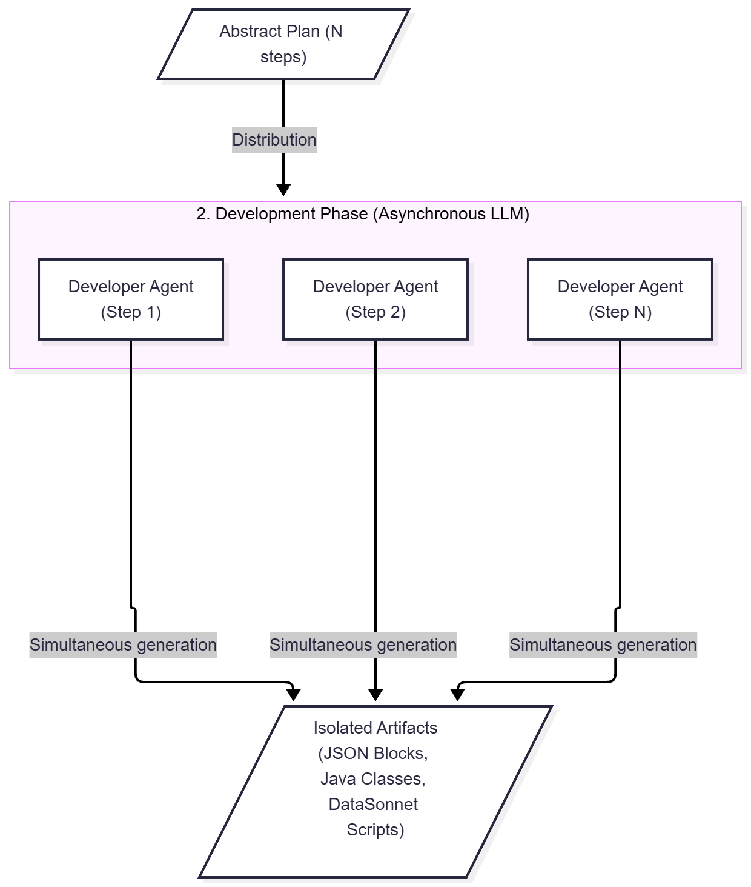
Keep project integrity out of the model
The assembler generates build descriptors, configuration, entry classes, identifiers and global handlers. It connects units, removes unreachable elements and compares transformation fields to detect silent data loss.
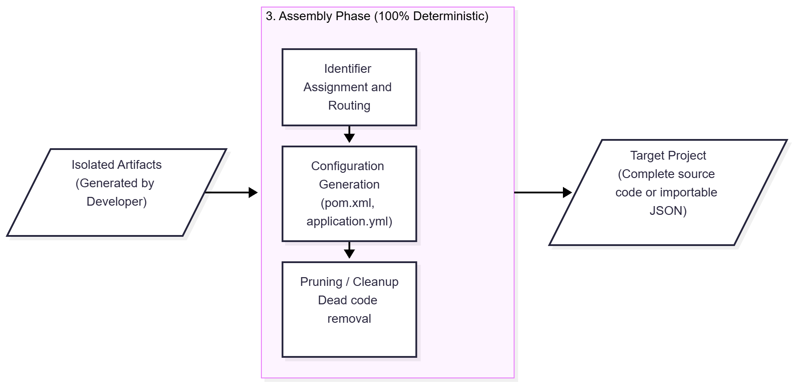
Use concrete execution errors as feedback
For Apache Camel and Spring Boot, the project is compiled and started. If it fails, the repair agent receives the exact error and failing block. The loop stops after three attempts or when no progress is made.
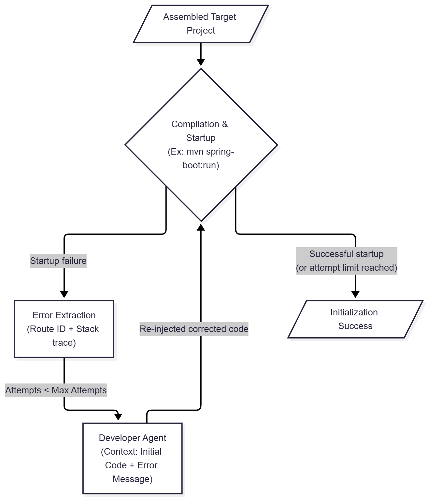
The loop is bounded to three attempts and stops early when the correction does not produce meaningful progress.
Turn unresolved work into an explicit deliverable
Credentials, deployment endpoints and connector instances cannot be generated safely without the target environment. Refactory collects these placeholders together with planner warnings, unrepaired routes and validation findings.
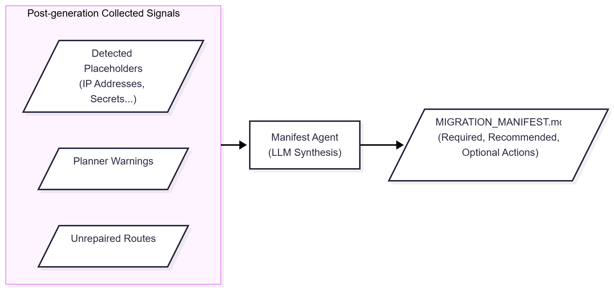
The manifest preserves uncertainty instead of hiding it in generated code. A JSON version supports tooling, while a Markdown version gives the engineer a prioritised checklist.
14 / Validation
Observable behaviour is the final test.
A project that imports or compiles can still route the wrong request, drop a transformed field or mishandle a failure. Validation therefore covered structure, execution and behaviour.
Deterministic unit tests
Test parsers, graph construction, ordering, symbol resolution, secret extraction, identifiers and assembly rules in isolation.
Structural comparison
Check that source entities and logic appear in the generated artefact.
Import or execution
Import proprietary artefacts or compile and start open-source targets.
Scenario replay
Send the same API requests to source and target and compare responses.
A capability-focused end-to-end suite
I built twelve complete test applications with a colleague. Each isolated one integration capability while still using a real backend. This kept failures attributable without reducing the evaluation to unit-level mocks.
Observed results on the controlled suite
The generated artefacts imported or compiled without structural correction in nearly all controlled executions. Replayed scenarios reproduced the expected status codes, content, routing, transformations and error behaviour. Together, these results demonstrate the feasibility of the architecture and provide a concrete foundation for extending validation to additional project patterns.
15 / Implementation
From an engineering pipeline to an operable application.
The first version ran through a CLI. I then built a local application so a user could prepare, launch and inspect migrations without operating the pipeline directly.
Follow activity, status and model usage
The dashboard centralises previous migrations, their target platform, execution status, token consumption and estimated model cost.
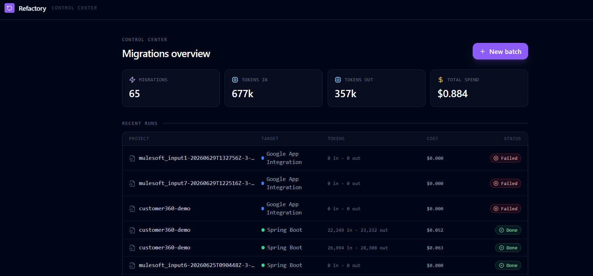
Queue several projects with controlled concurrency
Users can submit multiple migrations, choose how many run at once and follow each project as it moves from scanning to parsing, planning, development, assembly, repair and manifest generation.
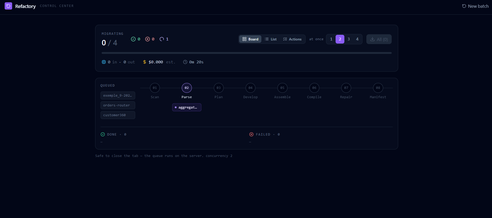
Inspect the target before downloading it
The result view exposes the complete file tree and generated source code. Token usage, cost and migration status remain visible alongside the artefact.
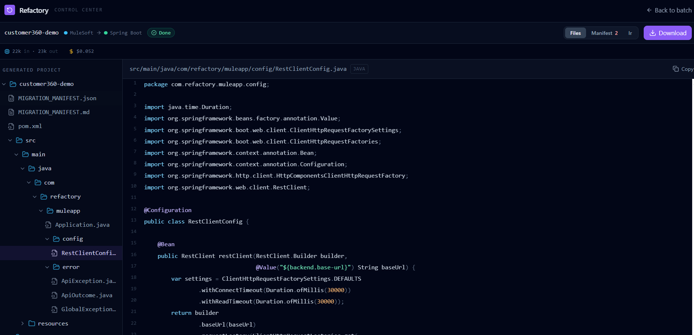
Keep the system's interpretation inspectable
The structured IR remains accessible so an engineer can inspect the application model and trace resolved properties or remaining placeholders before reviewing the generated target.
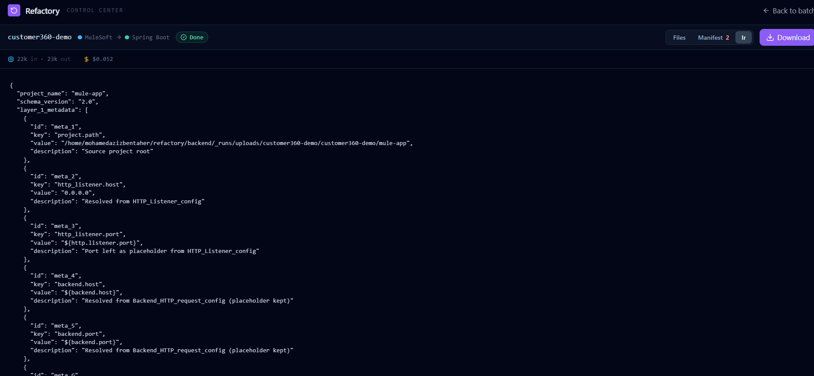
Review what remains before deployment
The result includes machine-readable JSON and a Markdown checklist that separates blocking configuration from recommended verification and optional improvements.
The same workflow remained available through the command line and an MCP server, allowing external tools or coding assistants to trigger a migration and inspect its outputs.
16 / Technical stack
Technologies chosen around explicit responsibilities.
Python · FastAPI · HTML/CSS/JavaScript
Pipeline orchestration, API layer and local web application.
LangChain · structured LLM outputs
Prompted semantic stages, typed schemas and controlled model calls.
ChromaDB · embeddings · RAG
Semantic access to verified target-component examples.
XML · JSON · Java parsing · graphs
Repository parsing, reference resolution and topological ordering.
MuleSoft · GAI · Camel · Spring Boot
Four distinct integration and execution models.
Maven · curl · scenario replay
Compilation, startup checks and behavioural comparison.
17 / Retrospective
What worked, what remains and where the architecture can go.
A useful modular foundation
- The canonical IR separated source and target responsibilities.
- Deterministic controls reduced avoidable model variability.
- RAG grounded generation for the poorly documented format.
- The suite provided behavioural evidence through executable scenarios.
- Adding or reversing platform roles did not rewrite the core.
Extend the existing foundation
- Automate source-versus-target scenario replay and comparison.
- Expand the verified component catalogues and connector coverage.
- Partition larger dependency graphs for incremental analysis and generation.
- Link diagnostics directly to source, IR and target nodes.
- Guide environment configuration without exposing secrets.
Next improvements
These improvements fit the existing architecture without a major redesign. That capacity for extension was one of the main project objectives.
18 / Personal reflection
What I learned from building Refactory.
Refactory was the first project in which I had to design an AI system across an entire engineering workflow. The work extended beyond optimising one isolated model.
I learned to turn an open-ended problem into bounded subsystems with explicit contracts.
I learned to remove responsibilities from the LLM when deterministic logic was more reliable.
Reverse-engineering an undocumented format required systematic experiments and evidence-based conclusions.
A generated artefact becomes useful once its behaviour has been compared with the source.
I moved from a technical pipeline to an interface with monitoring and inspectable outputs.
I learned to explain architectural trade-offs and keep uncertainty visible in engineering terms.
The project strengthened my ability to combine AI methods, software architecture and critical engineering judgement to solve a complex transformation problem.